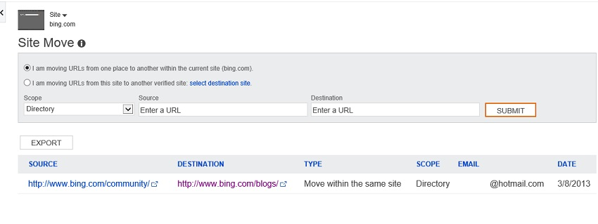

You might be aware that we have recently changed our domain name. It was not at all an easy task and we got to learn so many things during the whole process of domain change. We have moved our WordPress site from the old domain (easysteps2buildwebsite.com) to a new domain (beginnersbook.com). We heard positive comments from our readers and we are pretty happy with the change. Few of our readers were asking about a full process of moving the whole site from old domain to new domain, we thought we should share the detailed steps in this post.
Steps to move WordPress site from one domain to another
These steps would be same whether you are moving you site to the same host or new Host
Step 1: Backup the old site
It’s an important step as if something goes wrong you should be able to revert the changes. Before moving the site to new domain you should backup the old site first. There are three ways to backup your whole site. I did it using cpanel option.
a) Use any of the WordPress plugins like backupwordpress, backwpup, wp-db-backup(It only backup your database), WordPress backup to WordPress etc.
b) Use any FTP client like FileZilla to manually download the files and folder.
c) Use cpanel to generate and download the website’s backup – I used this method because I got the backup files + I got the wp-content folder of my old site which I would be needing in step 4.
Step 2: Export All content from the old site
In this step we are gonna export all content (Posts, Pages, comments, Custom fields, menu etc). Go to Tools » Export select “All content” and click “Download export file“. It would generate a XML file, save it on your hard disk, we would later need to import this file on new site.
Step 3: Install WordPress on New Domain
Login to new site’s cpanel and install WordPress.
Step 4: Copy the wp-content folder to new Site – Override existing files
In the first step we have downloaded the files and folder from old site, now we need to ftp the wp-content to new site. Since we have already installed WordPress on new domain, you must need to override the existing wp-content folder on new domain.
There would be a folder named uploads inside wp-content folder which would be having media files (image and videos) empty that folder (do not delete the folder just delete the files of it). Why we are emptying the folder? We will be downloading all the media attachments in the step 5 if you do not empty the folder you would end up in having duplicate media files.
Step 5: Import “All Content” XML file on New site
Go to Tools » Import click on WordPress and install activate the WordPress importer plugin. Browse the XML file which we have downloaded in step 2 and upload it as shown below. In the next screen click submit (Do not forget to check Download and import file attachments option before clicking submit).
Possible Issue and solution:
While Importing you may get the below error –
Fatal error: Allowed memory size of 33554432 bytes exhausted (tried to allocate 2112217 bytes) in /home2/xxxx/public_html/wp-includes/plugin.php on line xxx
To Resolve this issue just add the following line of code in wp-config.php file which is located in the root WordPress directory.
define('WP_MEMORY_LIMIT', '64M');
Source: http://www.wpbeginner.com/wp-tutorials/fix-wordpress-memory-exhausted-error-increase-php-memory/
Step 6: Prevent search engine bots to crawl and index new site until the whole process gets completed
I didn’t move the site in hurry. In fact I tested the site for 2-3 days before setting up the permanent redirect to new site. So I made sure to block search engine to index my new site as it would result in a duplicate content issue.
Create a robots.txt file in root directory and paste the below code –
User-agent: * Disallow: /
Add the below robots meta tag in the header of your site. Above code is sufficient enough to block bots but still we can use this method to make sure.
<meta name="robots" content="noindex, nofollow" />
Step 7: Update Urls on new site
First change the default permalink. The permalink structure of new site should match the structure of old website.
Now, we have all the content moved to the new site but still we need to change the internal links which are present in content, comments etc. To do this you can use any of the below plugin –
1) Velvet blues update urls – The only downside of this plugin is it doesn’t update the url in comment which means the comments you have left as an admin would still be having old domain if you use this plugin.
2) Search and replace – It’s a perfect plugin. It updates the Urls completely without any issues.
Once you are done updating Urls, use Xenu to check for broken links. You must use this tool to check for broken links as it is near impossible to validate all your links manually. Xenu would check each and every link on your new site and would generate a report which you can use to cross verify links.
Step 8: Test your new Site
Activate theme and plugins on new site. Since we have replicated the same content on new domain. You must need to double check everything including internal link, comment links, media source links etc. You may take time to check everything without worrying about duplicate content issue as we have blocked the search engine bots on new website.
Step 9: Update robots.txt on new site and setup 301 (permanent redirect)
Once you are sure that everything is perfectly fine, remove meta robots tag and robots.txt content which we have added in step 6. Now it’s time to setup 301 Redirect from old domain to new domain. 301 redirect is also known as permanent redirect, it redirects visitors and search engine to your new site. It also ensures the flow of link juice (page rank) and traffic.
Add the below lines in the .htaccess file of your old domain.
#Options +FollowSymLinks RewriteEngine on RewriteRule ^(.*)$ http://www.newdomain.com/$1 [R=301,L]
Replace http://www.newdomain.com/ with new domain name you have choose.
How to Notify Google about the domain change
It’s time to notify Google about the domain change. Login to Google Webmaster tools and submit a change of Address request. However you must need to add and verify the new domain in Webmaster tools before placing this request.
Read more about it at –
Submit sitemap in Webmaster tools for new site.
How to Notify Bing about the domain change

Login to Bing Webmaster tools. Add and verify the new site as you did for old site. Go to Diagnostics & Tools » Site Move you would find a screen like the one shown above.
Choose: Select the below mentioned options in the site move tool.
I am moving URLs from this site to another verified site.
Scope: Domain
Source: Old Site URL
Destination: New Site URL
Click Submit
Source: http://www.bing.com/webmaster/help/how-to-use-the-site-move-tool-bb8f5112
Update the Domain name in feed
Login to http://feedburner.google.com and click Edit Feed Details as shown below.
Update feed title, Original feed link and feed address.
How to change the domain name in Google Analytics
Login to Google Analytics and click Admin in the top right menu.
Change the default URL in property settinngs
Change the Website’s URL in View Settings.
That’s it you are done with changing domain name in Google analytics. Now the same Google analytics account would show you the tracking data for new domain. Do not forget to add the same Analytics tracking code on new site. If you lost the script you can get it from Property » tracking info tab in Google analytics admin page.
I know changing the domain name does not sound easy as it involves lot of manual work and risk of loosing page rank and traffic. Still, if you have made your mind to go for the domain change, follow the steps. You should be able to move the site to new domain without any issue. If you have any questions/feedback regarding this, please feel free to share it in the comments.
Leave a Reply